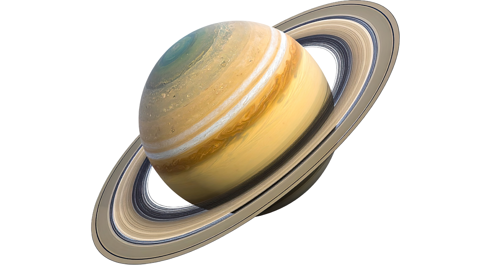

Сатурн (Saturn)
Сақиналы алып: Системалық сипаттама
Сатурн — Күн жүйесіндегі алтыншы және Юпитерден кейінгі екінші үлкен планета. Ол негізінен сутегі мен гелийден тұратын газды алып. Оның ең танымал ерекшелігі — мұз бен тау жыныстарынан тұратын әдемі, ауқымды сақиналар жүйесі. Бұл сақиналар Сатурнды бүкіл ғарыштағы ең көрнекті нысандардың бірі етеді.
Қызықты Деректер (DATA ARRAY)
Сақиналар Жүйесі:
Оның жеті негізгі тобы бар (A, B, C, D, E, F, G), олар триллиондаған мұз бөлшектерінен тұрады.
Төмен Тығыздық:
Сатурнның орташа тығыздығы судың тығыздығынан аз. Егер оны су толтырылған үлкен ваннаға салса, ол бетінде жүзіп кетер еді.
Титан Серігі:
Оның ең үлкен серігі — Титан, тығыз атмосферасы бар жалғыз серік және бетінде сұйық метан көлдері бар.
Тәулік Жылдамдығы:
Сатурнның бір тәулігі өте қысқа, шамамен 10.7 сағатқа созылады. Бұл оның экваторының ісінуіне себеп болады.
Екінші Үлкен Алып:
Юпитерден кейінгі Күн жүйесіндегі екінші үлкен планета.
Ғарыштық Миссия:
"Кассини-Гюйгенс" миссиясы 2004 жылдан 2017 жылға дейін Сатурн мен оның серіктерін толығымен зерттеді.